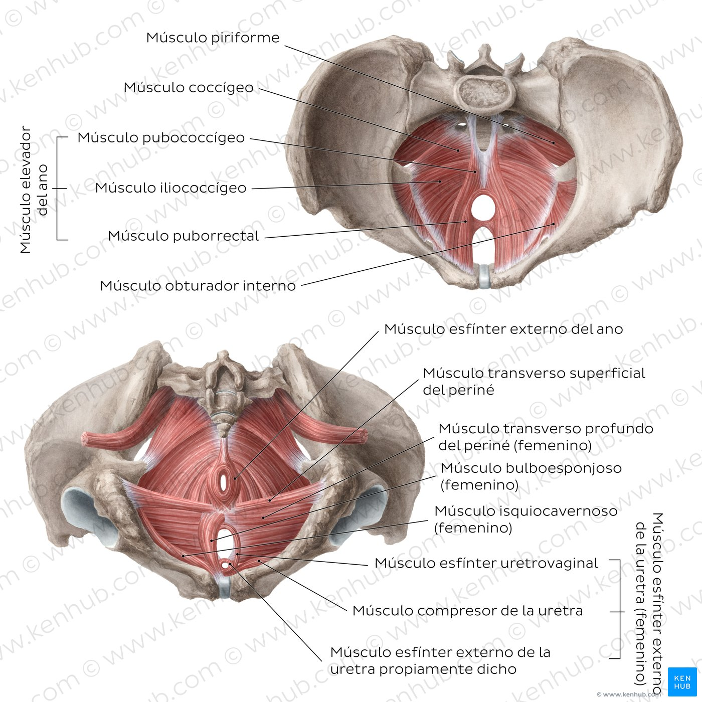

Musculos
El suelo pélvico masculino está formado por una serie de músculos que se distribuyen en tres planos en grados distintos de profundidad. De esos músculos, hay uno muy importante en la elaboración de los ejercicios de Kegel que es el músculo pubocoxígeo. Este músculo, situado en el suelo de la pelvis, forma parte del elevador del ano y se extiende desde el hueso del pubis a la zona inferior de la columna vertebral. Su contracción voluntaria repetida —en los ejercicios de Kegel— ayuda a fortalecerlo ayudando con el control de los esfínteres (tanto urinario como anal) y también con las disfunciones eréctiles y la eyaculación precoz . Para localizar el músculo pubocoxígeo, lo ideal es imaginar que estás haciendo pis y contraerlo para cortar el chorro, intentando relajar al mismo tiempo los músculos abdominales. Para comprobar que efectivamente se está contrayendo el músculo, hay que observar el pene que se retrae con la contracción o bien palpar la zona entre los testículos y el ano (la «hamaca» del periné es el músculo pubocoxígeo) y comprobar que se contrae esa zona.
Ejercicios
Los ejercicios de Kegel, también conocidos como entrenamiento de los músculos del piso pélvico, son ejercicios sencillos que se pueden hacer para tratar problemas de control de la vejiga y mejorar el control intestinal. Los ejercicios fortalecen los músculos del piso pélvico que sostienen la vejiga, el recto y el útero. Estos músculos, que se estiran como una hamaca desde el frente hasta la parte de atrás de la pelvis, pueden ayudar a evitar el escape de orina, de heces, o de gases en los momentos menos esperados.
Bombeos
Los bombeos son contracciones hechas en series lentas o rápidas (manteniendo la contracción cinco segundos en el primer caso o un segundo en el segundo caso), sentado con las piernas ligeramente separadas y las manos en las rodillas, con el torso del cuerpo inclinado hacia delante y la espalda recta.
Kegel inverso
Sentado de la misma manera que el ejercicio previo, de lo que se trata en este es de relajar al máximo el músculo pubocoxígeo. Para ello, realizamos el mismo movimiento que si fuéramos a defecar, presionando los músculos hacia fuera.
Kegel con ereccion
Colocando una toalla pequeña sobre el pene erecto, intenta levantar la toalla, aguanta en esa posición unos segundos y relaja. Lo ideal es realizar los ejercicios de Kegel en repeticiones de 10 veces todos los días, sin contraer la respiración durante la contracción del músculo. A medida que se instaura la rutina, es bueno subir a repeticiones de 20 veces.